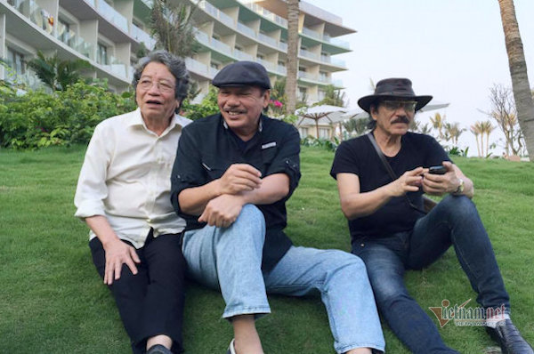

Trần Tiến, Nguyễn Cường bàng hoàng biết tin Phó Đức Phương qua đời
Nhạc sĩ Nguyễn Cường, Trần Tiến và các nghệ sĩ bày tỏ bàng hoàng, đau xót khi nhận thông tin Phó Đức Phương qua đời vì ung thư tụy.
Báo chí muốn phát triển, thực hiện sứ mệnh thì phải dùng công nghệ số
Học sinh lớp 5 chửi thề 'văng mạng', phụ huynh ngỡ ngàng
Covid-19 tăng tốc trên toàn cầu, số ca tử vong ở Mỹ vượt 200.000
Kết quả điều tra về cơ sở "Tịnh thất Bồng Lai"
Xe đạp điện và linh kiện xe điện lậu 'làm loạn' thị trường Việt
Cầu vượt 10 tỷ đồng không có lối lên ở Đà Nẵng
Đại gia bị xông vào tận phòng nhà nghỉ, cướp tài sản ở Hà Nội
Số phận bất hạnh của 4 đứa trẻ bán vé số bị cha mẹ chối bỏ
Sẽ xử lý về mặt chính quyền đối với ông Lê Vinh Danh
Ngôi chùa gỗ lim gần 400 tuổi, được coi là bảo vật vô giá ở Thái Bình
Ô tô dừng quá 5 phút sẽ bị phạt: Cánh tài xế nói gì?
Sự thật giật mình về set lẩu tokbokki toàn hải sản viên
Danh hài Bảo Chung ôm 300 cây vàng mua siêu xe, dân chơi cũng phải nể